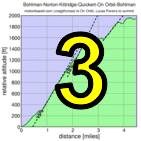

|  |  |
 |
| Results are closed! |

| results? | right here! |
| profile |  |
| distance | 2.95 miles (4.7 km) |
| climbing | 1613 ft (491 meters) |
| grade | 10.41% |
| where? | see below |
| when? | 26 Oct 2013 |
| what time | registration none to none climb starts @ any time Saturday |
| Result | Results are closed |
| waiver | no waiver for self-rides |
| how? |  |
| how much? | $10 (free for juniors and those with volunteer credit) |
| why? | Ask not why; just do! |
| coordinator | |
| volunteers | sign up! |
| aerial view | Stanford Cycling (Joaquin) Will Van Kaenel (Summit Spring) Will Van Kaenel (full route) Will Van Kaenel (Joaquin) |
| weather | Weather Underground |
| deja-vu? | New! |
| BikeMap | |
Sorry, folks! Our insurance requires all riders wear helmets during the climb, and we follow the USA Cycling rule against ear buds or other head phones. Rock to tunes before the climb, perhaps, but we need riders to pay attention to what's happening during the climb...
This week presents a series of short, challenging climbs around Portola Valley. Rider time will be based on climbing time, not the time riding from one climb to the next (within a limit).
The different aspect of this week is it will use ride data recorded on Strava. Low-Key software will download the ride data from the Strava web-site and apply our customized timing algorithms to determine the rider times between checkpoints. So to get a score from this climb, you need access to a Strava account (they're available free). Then you can record your ride using either a specialized GPS device or a phone with GPS. If you don't have one, feel free to ask on the Low-Key mailing list, and you can surely borrow one. Note we're not taking GPS data directly, nor are we taking data recorded on Garmin Connect or other web sites: only Strava, since we did a considerable amount of code development using the Strava API and want to make use of that rather than develop methods for other data sources.
Study the route carefully, as this week presents a navigational challenge in addition to a physical one. Ride the route continuously, in order, any time on Saturday. You have plenty of time to get from the summit of one climb to the base of the next riding at a moderate pace. In every case 10 mph average (including stop time) is plenty. For the climb to Joaquin you have one hour to descend Golden Oak then climb the 690 vertical feet to the base of that climb. Barring multiple mechanical delays, this shouldn't be a challenge for any Low-Keyer regulars. So save the legs for Joaquin.
The start is at the Alpine Inn at the intersection of Arastradero Road and Portola Valley Road. However, riders will surely want to warm up before this, so it is recommended those driving part elsewhere. For example, there are parking areas at the 280 exits at Sand Hill Road, Portola Valley Road, and Page Mill Road. Sand Hill will give the quickest escape route from the top of the final climb, while Page Mill provides a nice short route over Arastradero Road to the start of today's fun.
The route is challenging: one guy tried to ride it without navigation and I think he's still out there. Franz Kelsch has some nice directions on how to use navigation with the Garmin Edge 500.
The course is on Garmin Connect. From the Garmin Connect page, select "Send to Device" with your Garmin plugged into the USB port. Then when it's done, unmount your Garmin, unplug it from the USB, then turn it on. For example, in the Edge 500, if you hold the "Page/Menu" button, then go to "Training", then "Courses" it should be there.
Alternately, we also have the route (starting across the street from Arastradero on Alpine, just east of the turn onto Golden Oak) on BikeRouteToaster. BikeRouteToaster provides turn-by-turn directions, and allows printing of a queue sheet.
A third option is Paul McKenzie's set of routes on RideWithGPS. These avoid the problem of the course crossing itself, which causes Garmin units to become easily confused. The down-side is you need to follow the courses in sequence. Don't waste more than a few minutes starting the next course, however, since there's time limits: Part 1, part 2, and part 3.
The best option, perhaps, is old school: we also provide a pre-formatted cue sheet, suitable for taping to a top tube:
Second, riders will probably want to ride in small groups. The timing code will allow riders to go as slowly as a 10 mph average (6 min per mile) via the preferred route from the top of one climb to the start of the next. If you ride slower than this, the extra time will be added to your total. So regroups at the top of climbs, within reason, shouldn't be a problem.
Riders are responsible to ride safely and with respect for other road users at all times. There's no rush to get from one climb to the next. So just spin, relax, chat, and prepare yourself for what lies ahead.
In the case of wet weather in the forecast we may modify the route in the days before the climb. So watch these pages if it looks like rain's in the picture!
You're done! While you're there you might want to descend Summit Spring part way (the final steep climb) then turn left on Patrol. That descends to an intersection with Entrance Way. If you stay on Patrol it is a nice out-and-back which may have the steepest grade of the day.... just in case you haven't gotten enough.
Summary of time limits for getting from one hill to the next... these are all super-relaxed, plenty of time for faster riders to wait for slower riders:
| segment | distance | time limit |
|---|---|---|
| Golden Oak E to Joaquin | 7.73 km | 60 minutes |
| Joaquin to Hillbrook | 5.18 km | 25 minutes |
| Hillbrook R-hand turn | 41 m | 15 seconds |
| Hillbrook to Cerventes | 1.38 km | 10 minutes |
| Cerventes to Golden Oak W | 2.11 km | 10 minutes |
| Golden Oak W R-hand turn | 27 m | 15 seconds |
| Golden Oak W to Summit Spring | 10.15 km | 45 minutes |
We don't need volunteers as much this week, since it's a self-ride, although we can still use help the day before marking the route. You can volunteer to help using our volunteer form! Thanks!!!
Low-Key is all about a group of friends riding up a hill together. It's like any other informal group ride, except we time you to the top and report the results on our web site. But we have no road closures, no lead vehicle, no follow vehicle. We are traffic, sharing the roads with other traffic, following the laws and courtesy which applies to traffic. Think of it as a human-assisted Strava. We're each responsible for our own actions out there, on and off the bike, both as users of the road as as courteous visitors to the neighborhoods we pass through. "Ceci n'est pas un race".
{kind=link}